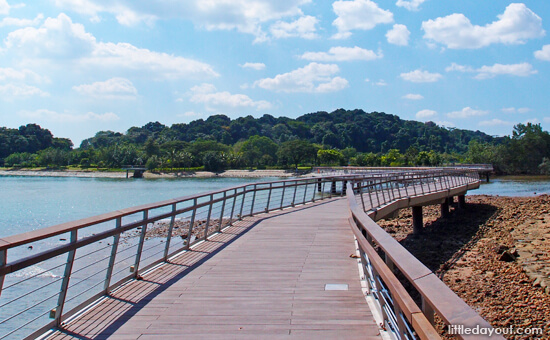
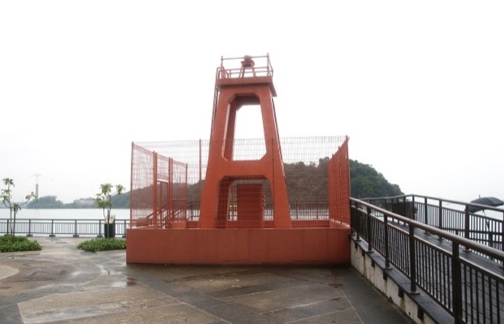
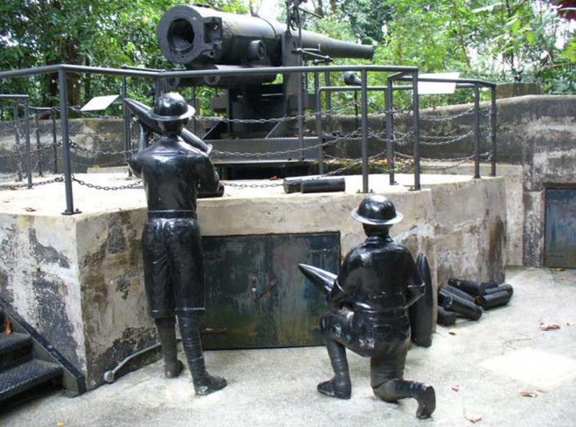
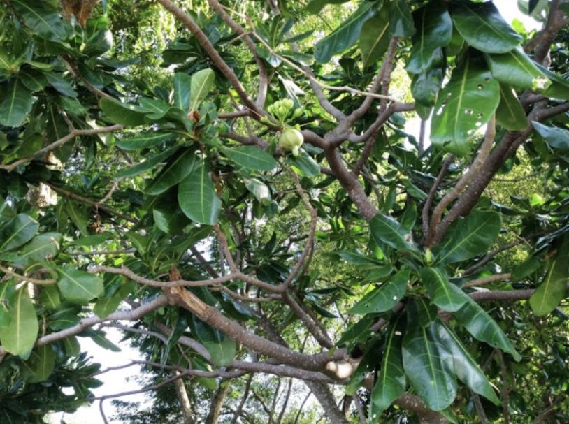

Wanna explore the nature of Singapore?
Bird watching, sightseeing, photography, nature walks ... you'll find out!
Wildlife in Labrador: The mammals, reptiles, birds and insects found in Labrador Nature Reserve all play important roles in the forest. There are some 81 species of birds and 46 species of butterflies have been recorded here and the list of species is still growing. One of the common sights is a Plantain Squirrel. You may even spot the Malayan Water Monitor lizards and skinks roaming around!
Places of Interest:
1. Berlayer Creek
1. The Berlayer Creek mangrove trail is 960m long and is one of the few remaining mangrove areas in the city area which is home to back mangrove species, as well as a myriad of fauna and flora, including one of the highest densities of molluscs in Singapore and giant mudskippers.
2. Bukit Chermin Boardwalk (330m) The Bukit Chermin Boardwalk provides a means for visitors to explore the rocky coastline along Keppel Harbour. The view from the boardwalk is fantastic such as the distant Sentosa Island, coastline of Labrador Nature Park and the wonderful architecture of Reflections by Keppel Bay.

3. Red Beacon The iconic seven-metre tall structure at Tanjong Berlayer served as a navigational beacon for boats and ships approaching Keppel Harbour in the mid-20th century. Ships entering the harbor used the red Berlayer Beacon as a visual marker to navigate themselves towards the harbor.

4. For Pasir Panjang One of the 11 coastal artillery forts built by the British in the 19th century to defend the western passageway into Keppel Harbour against piracy and foreign naval powers. It was found that the steep cliffs and thick mangrove swamps surrounding the forts acted as an ideal natural barrier to intruders.

The Fish Poison tree has fluffy flowers, which open at night to release strong scents to attract nocturnal pollinators such as moths and bats.
 Opening Hours:
7am - 7pm (Mon - Sun)
To find out for more activities,
Visit National Parks!